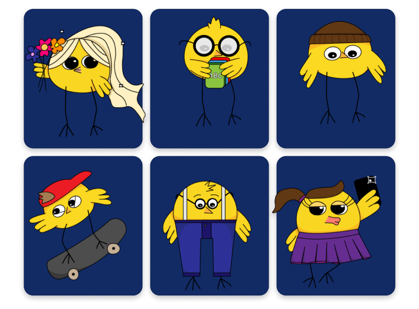
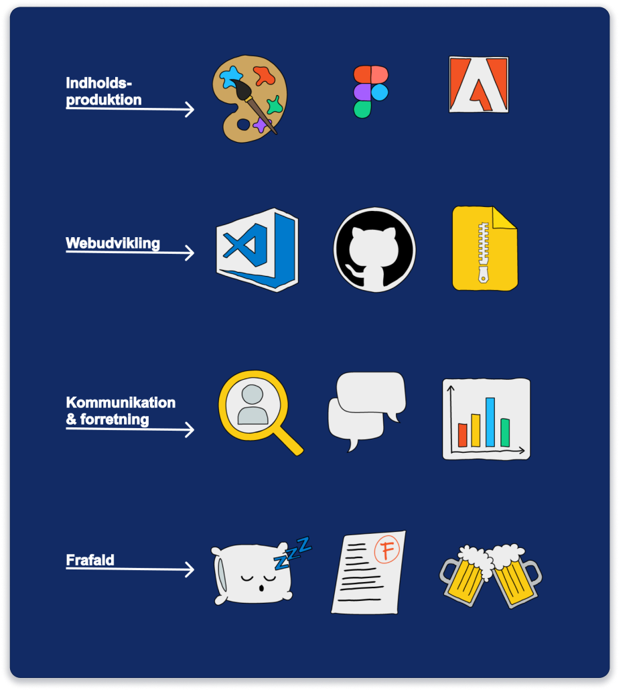
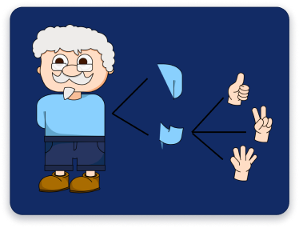
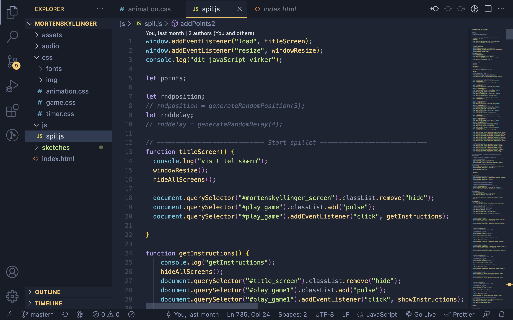

I sommeren 2022 startede jeg på en bachelor i sociologi. Jeg fandt dog hurtigt ud af, at det eneste der fangede mig ved udannelsen var, når vi skulle bruge et programmeringssprog til at håndtere dataset. Min interesse for kodning blev vakt til livs og siden da vokset. I sommeren 2023 startede jeg på uddannelsen Multimediedesign og har nu på mit 3. semester valgt at specialisere mig i webudvikling - kodning. Jeg er vild med at kunne kombinere min kreative side med min logisk-tænkende og nørdede side.
Mit fokus er i øjeblikket at dygtiggøre mig inden for OOP JavaScript, og udvide mit repetoire af kodesprog. Jeg har et mål om at blive fullstack developer i fremtiden, men lige nu fokuserer jeg på skulle at ville lære mit første backend sprog.
Når jeg ikke sidder hypnotiseret bag computeren med hovedet i mit studiet, arbejder jeg som kommunikations studentermedhjælper hos Center for IT og Medicoteknologi (CIMT), Region Hovedstaden, som giver mig nogle fantaske kompetencer i hvordan webløsninger fungerer for en kæmpe organisation. Her får jeg lov at bruge min allerede tillærte viden til at opdaterer webløsninger og samtidig bruge mine kreative egenskaber til den visuelle formidling.
Mortens Kyllinger
Et whack-a-mole spil animeret fra bunden og kodet med JavaScript.
Klikbare ikoner
Build a Morten
Brug af JavaScript
Hvordan kunne koden optimeres?
Ved hjælp af enkapsulation ville jeg oprette en class med en constructor der håndterede alle de forskellige container og sprites, for at mindske gentagelser.
Inde i denne class ville jeg også lave en metode der håndterede click, reset og generate random position
Herefter ville jeg hente en instans af hver af mine ikoner både deres sprite og container.
Kan du bare ikke få nok af mig?
Så er her en Portræt-video
Enjoy!